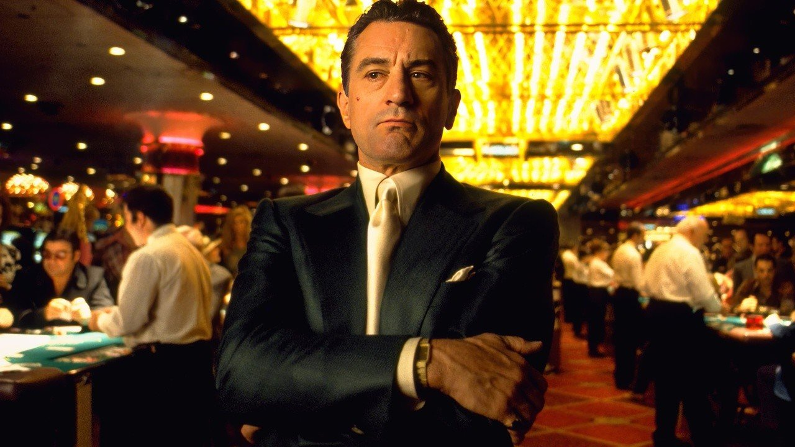

A Matemática dos Jogos de Azar
Ace Rothstein diz que o cassino sempre ganha. A estatística mostra que não é só uma frase de efeito

Tem uma cena em Cassino, um dos melhores filmes de Martin Scorsese, em que Sam "Ace" Rothstein (Robert De Niro) afirma que o cassino sempre ganha e que os jogadores não têm a menor chance. Será que essa frase tem fundamento ou é apenas uma boa frase de efeito?
Para entender como os cassinos ganham dinheiro com os jogos de azar, é preciso entender dois conceitos da estatística, a esperança matemática (ou valor esperado) e a lei dos grandes números.
Esperança matemática
A grosso modo, a esperança matemática é a soma dos produtos entre a probabilidade de cada resultado e o valor associado a ele. Pensemos num exemplo. Imagine que você está apostando em corridas de cavalo. Seu cavalo tem 60% de chance de ganhar e, caso ganhe, você leva 100 reais para casa. Caso perca, não leva nada.
| Cavalo vence (60%) e você recebe R$ 100 | 0,6 × 100 = 60 |
| Cavalo perde (40%) e você recebe R$ 0 | 0,4 × 0 = 0 |
| Valor esperado da aposta | R$ 60 |
O valor esperado não é o valor que você espera ganhar numa aposta. Numa corrida você leva 100 ou leva zero, nunca 60. Ele é o quanto você ganha em média se jogar muitas vezes.
A lei dos grandes números
A lei dos grandes números é um teorema que nos diz que, quanto maior o número de repetições de um experimento, mais a média dos resultados se aproxima do valor esperado. Em poucas tentativas a sorte manda. Em muitas, quem manda é a matemática.
Pense novamente na corrida de cavalos, mas agora você precisa pagar 20 reais para participar. Se fizer 100 apostas desse tipo e ganhar 60% delas, você recebe 60 × 100 = 6.000 reais. Só que pagou 20 reais em cada uma das 100 apostas, um custo de 2.000 reais, e seu lucro na verdade é de 4.000 reais. Dá para simplificar tudo isso. O valor esperado é 60 e a entrada custa 20, então cada aposta rende em média 40 reais líquidos. Quanto mais você jogar, mais o seu resultado médio fica perto desses 40.
É claro que nenhuma casa de apostas ofereceria um jogo assim. Esse é um jogo de valor esperado positivo para o apostador, e a lei dos grandes números trabalharia a favor dele. Nos cassinos, a conta é montada ao contrário.
A roleta
Na roleta europeia há 37 casas, numeradas de 0 a 36. Dezoito são vermelhas, dezoito são pretas e uma, o zero, é verde. Quem aposta 10 reais no vermelho dobra o dinheiro se a bola cair numa casa vermelha e perde tudo nos outros casos. Parece um cara ou coroa, mas o zero desequilibra a moeda.
| Chance de ganhar (bola no vermelho) | 48,65% |
| Chance de perder (preto ou zero) | 51,35% |
| Valor esperado de cada aposta de R$ 10 | −R$ 0,27 |
| Vantagem da casa (1 ÷ 37) | 2,70% |
Cada aposta de 10 reais custa, em média, 27 centavos ao jogador. Parece pouco, e é justamente por parecer pouco que funciona. Na roleta americana, que tem o zero e o duplo zero, a vantagem da casa sobe para 5,26%. Todos os jogos de um cassino, da roleta às máquinas caça-níqueis, são desenhados para ter valor esperado negativo para quem aposta.
Por que o cassino nunca perde
Aqui a lei dos grandes números entra em cena. Um jogador que faz poucas apostas ainda está no território da sorte, e pode muito bem sair do cassino com lucro. O problema é que, a cada nova rodada, o resultado dele se aproxima um pouco mais dos −2,70%. A tabela abaixo mostra a chance de alguém que aposta sempre 10 reais no vermelho terminar a noite no lucro.
| Número de apostas | Chance de sair no lucro |
| 10 | 34,4% |
| 100 | 35,5% |
| 1.000 | 18,8% |
| 10.000 | 0,33% |
| 1.000.000 | praticamente zero |
O cassino, por sua vez, não é um jogador. Ele está do outro lado de milhões de apostas todos os dias. Num milhão de apostas de 10 reais, o lucro esperado da casa é de 270 mil reais, e a chance de ela terminar no prejuízo é tão pequena que não faz sentido escrevê-la. Para o jogador, cada rodada é uma aventura. Para o cassino, é uma linha numa planilha cujo total ele já conhece de antemão.
Por isso a frase de Ace precisa de um pequeno ajuste para ficar matematicamente perfeita. O cassino não ganha todas as apostas, e perde muitas delas todas as noites. O que ele ganha, sempre, é a soma de todas elas.
A sorte pertence ao jogador por uma noite. A média pertence ao cassino para sempre.
Os jogos de azar têm valor esperado negativo e, pela lei dos grandes números, quanto mais se joga, mais o resultado converge para essa média. Os jogadores tendem a perder dinheiro no longo prazo, e o cassino, que vive no longo prazo, sempre ganha. Matematicamente, Ace Rothstein está certo.